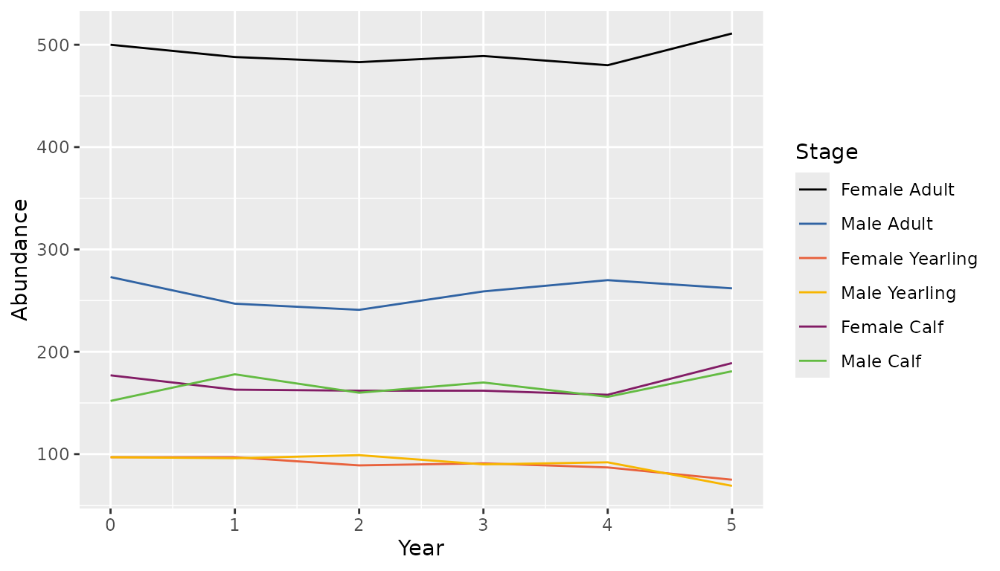
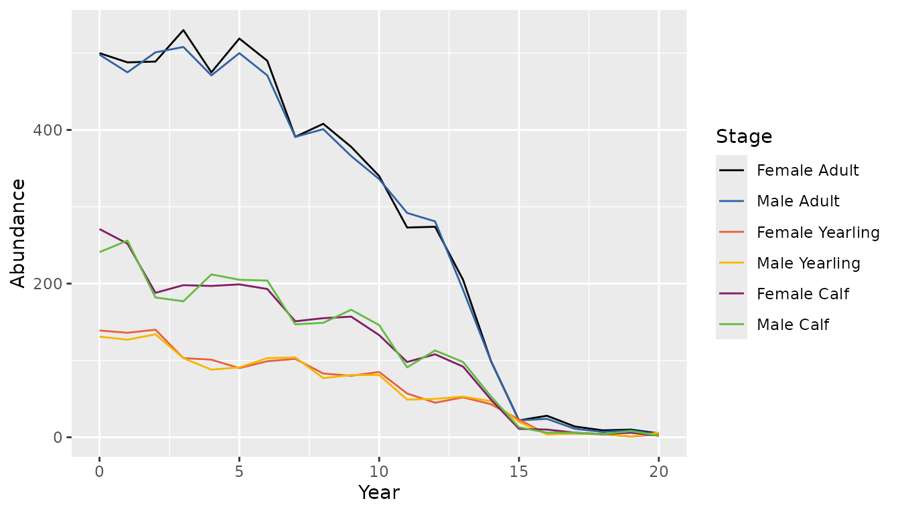

There are four key steps to simulating Boreal Caribou survival and recruitment data:
Any number of survival and recruitment data sets can be simulated from a single set of survival and fecundity rates.
Survival rates are simulated for each month, year and stage with
bbs_survival_caribou() and fecundity rates are simulated
for each year and stage with bbs_fecundity_caribou().
Rates are generated for three stages: female calf, female yearling, and female adult.
Survival rates for female calves and female adults are generated stochastically from linear models taking the following form (simplified for readability):
\[ \text{logit}(Survival_{y,m}) = \beta_0 + \beta_Y \cdot Year_{y} + \beta_{A_{y}} + \beta_{M_{m}} + \beta_{AM_{y,m}} \]
The intercept (\(\beta_0\)) is
provided by the user to bbs_survival_caribou() as the
annual survival rate in the first year. Internally, this rate is
transformed to a monthly rate on the log-odds scale.
\(\beta_{A}\), \(\beta_{M}\) and \(\beta_{AM}\) are random effects representing the annual variation, monthly variation and month within annual variation on the log-odds scale. Random effects are generated stochastically from a normal distribution with a mean of 0 and standard deviation provided by the user.
\(\beta_{Y}\) is a trend representing the effect of an increase of one year on the log-odds monthly survival rate.
Female calf and female adult survival rates are specified from separate linear models, whereas female yearling survival is specified as an effect on female adult survival.
Fecundity rates are generated from a linear model taking the
(simplified) form: \[
\text{logit}(Fecundity_{y,m}) = \beta_0 + \beta_Y \cdot Year_{y} +
\beta_{A_{y}}
\] The intercept (\(\beta_0\))
is provided to bbs_fecundity_caribou() as the annual rate
of calves per adult female in the first year.
Internally, this is transformed to the log-odds scale.
As in bbs_survival_caribou(), the standard deviation of
the annual variation on the log-odds scale (\(\beta_A\)) is provided by the user and the
trend (\(\beta_Y\)) represents the
effect of an increase of one year on the log-odds calves per adult
female.
set.seed(1)
nyear <- 5
survival <- bbs_survival_caribou(
survival_adult_female = 0.85,
annual_sd_adult_female = 0.2,
month_sd_adult_female = 0.1,
survival_calf_female = 0.5,
yearling_effect = 0.05,
nyear = nyear
)
fecundity <- bbs_fecundity_caribou(
calves_per_adult_female = 0.7,
annual_sd = 0.1,
trend = 0.05,
nyear = nyear
)The output of bbs_survival_caribou() is a list
containing the intercept (b0), trend (bYear),
individual random effects (bAnnual, bMonth,
and bAnnualMonth) and the expected monthly survival,
eSurvival.
eSurvival is an array with the survival rate in each
month, year and stage.
# adult female (stage 3) survival rates for the first 5 years
survival$eSurvival[, 1:5, 3]
#> [,1] [,2] [,3] [,4] [,5]
#> [1,] 0.9834999 0.9859332 0.9828071 0.9893564 0.9863321
#> [2,] 0.9854934 0.9876364 0.9848830 0.9906491 0.9879876
#> [3,] 0.9858478 0.9879391 0.9852521 0.9908787 0.9882818
#> [4,] 0.9856192 0.9877438 0.9850140 0.9907306 0.9880920
#> [5,] 0.9843153 0.9866300 0.9836561 0.9898854 0.9870094
#> [6,] 0.9868873 0.9888267 0.9863348 0.9915518 0.9891445
#> [7,] 0.9853533 0.9875167 0.9847371 0.9905583 0.9878713
#> [8,] 0.9838201 0.9862068 0.9831405 0.9895642 0.9865981
#> [9,] 0.9810780 0.9838626 0.9802856 0.9877835 0.9843193
#> [10,] 0.9863772 0.9883911 0.9858034 0.9912215 0.9887211
#> [11,] 0.9847123 0.9869692 0.9840696 0.9901428 0.9873391
#> [12,] 0.9847556 0.9870061 0.9841146 0.9901709 0.9873750The output of bbs_fecundity_caribou() is a list
containing the intercept (b0), trend (bYear),
individual annual random effects (bAnnual) and the expected
annual calves per adult female, eFecundity.
eFecundity is an matrix with the fecundity rates for
each year and stage.
fecundity$eFecundity
#> [,1] [,2] [,3]
#> [1,] 0 0 0.7194392
#> [2,] 0 0 0.7269931
#> [3,] 0 0 0.7323715
#> [4,] 0 0 0.7482302
#> [5,] 0 0 0.7550096Boreal Caribou population is projected from survival, ageing and birth using a matrix model. Survival occurs at the end of each month and survival, ageing and birth occur at the end of each year, in that order.
Internally, a custom function (%*b%) is used for
stochastic matrix multiplication in each period. For demonstration, the
survival rates for the first period are converted to a process matrix
and multiplied by an initial population vector.
set.seed(1)
initial_pop <- c(100, 80, 180)
survival_mat1 <- bbs_matrix_survival(survival$eSurvival[1, 1, ])
survival_mat1 %*b% initial_pop
#> [,1]
#> [1,] 96
#> [2,] 79
#> [3,] 177Initial population abundance for each stage is determined from the
initial number of adult females set by the user and the calculated
stable stage distribution, which is informed by the calves per adult
female intercept, adult female survival intercept, calf survival
intercept and sex ratio (see bbs_demographic_summary() for
details).
Population abundance for male stages are drawn stochastically from a
binomial distribution, with probability from user-provided sex
ratios.
population <- bbs_population_caribou(survival,
fecundity = fecundity,
adult_females = 500,
proportion_adult_female = 0.65
)The output is a matrix with abundance for each period and stage. The first period is the initial population and period 13 is the final month of the first year. Stages are female calf, male calf, female yearling, male yearling, female adult and male adult, in that order.
# projected population for first year
population[, 1:13]
#> [,1] [,2] [,3] [,4] [,5] [,6] [,7] [,8] [,9] [,10] [,11] [,12] [,13]
#> [1,] 177 163 149 145 136 129 123 118 113 108 102 98 173
#> [2,] 152 178 158 148 134 133 128 118 104 107 116 103 172
#> [3,] 97 97 95 95 94 92 90 88 87 84 83 81 91
#> [4,] 97 96 87 92 90 83 100 85 86 92 88 84 97
#> [5,] 500 488 480 476 467 453 443 439 437 430 424 417 490
#> [6,] 273 247 253 249 259 237 247 250 243 213 229 246 276
bbs_plot_population(population)
It can be useful to view estimates of key demographic summary metrics (i.e., lambda, recruitment, stable stage distribution) prior to simulating data, e.g., to assess the stability of the population.
bbs_demographic_summary(
calves_per_adult_female = 0.7,
survival_adult_female = 0.85,
survival_calf = 0.5,
proportion_female = 0.65
)
#> $calf_cow_ratio
#> [1] 0.2745098
#>
#> $recruitment
#> [1] 0.1514143
#>
#> $lambda
#> [1] 1.010857
#>
#> $stable_stage_dist
#> [1] 0.2434066 0.1203962 0.6361972As another example of population projection, adding a high negative trend, high standard deviation of the annual variation in the adult female survival and adult female proportion of 0.5 will cause higher variation, downward projection of population and similar number of males and females.
set.seed(1)
nyear <- 20
survival2 <- bbs_survival_caribou(
survival_adult_female = 0.85,
annual_sd_adult_female = 0.6,
trend_adult_female = -0.1,
nyear = nyear
)
fecundity2 <- bbs_fecundity_caribou(
calves_per_adult_female = 0.8,
nyear = nyear
)
population2 <- bbs_population_caribou(survival2,
fecundity = fecundity2,
adult_females = 500,
proportion_adult_female = 0.5
)
bbs_plot_population(population2)
Individuals in a projected population can be allocated into groups in
each period. The user can adjust the group size (drawn from a
gamma-poisson distribution with mean lambda and dispersion parameter
theta), minimum group size and maximum group size as proportion of total
population. Individuals are assigned randomly to groups until they are
filled. See ?bbs_population_groups for more details on the
algorithm.
set.seed(1)
groups <- bbs_population_groups(population,
group_size_lambda = 6,
group_size_theta = 1,
group_min_size = 2,
group_max_proportion = 0.5)The output is a list of lists representing the period and groups within each period. Each group is a vector representing individuals and their stage.
For example, the first group in the first period has 7 individuals comprised of 3 female adults, 1 female calf, 2 male calves, and 1 male yearling.
groups[[1]][[1]]
#> [1] 5 5 1 5 4 2 2Groups can be sampled in each composition survey month using
bbs_population_groups_survey(). The proportion of groups
observed is set with group_coverage.
month_composition is relative to the start of the
biological year.
set.seed(1)
groups_observed <- bbs_population_groups_survey(population,
month_composition = 9L,
group_size_lambda = 6,
group_min_size = 2,
group_coverage = 0.1)The output is a list of lists representing the year and groups within each year.
# observed groups in first year
groups_observed[[1]]
#> [[1]]
#> [1] 5 5 1 5 5 5 5 1
#>
#> [[2]]
#> [1] 5 2 3 5 6 3 5 5 2 1
#>
#> [[3]]
#> [1] 5 2 2 4 2 5 5 6 6 1 5 2
#>
#> [[4]]
#> [1] 5 2 6 6 1 2 5
#>
#> [[5]]
#> [1] 1 5 6 1 4 3 5 4 1 2 4 2 5 6 3
#>
#> [[6]]
#> [1] 5 5 6 3 6 5 3 6 5 3 5 5 5
#>
#> [[7]]
#> [1] 5 5 5 5 5 1 6 5 6 5 5 5 2 5 5 5 6 3 5 5 2
#>
#> [[8]]
#> [1] 2 5 2 2 2 5 5 4 5 2 5 3 5 6 5 2 5 5 3 5 3 1 3
#>
#> [[9]]
#> [1] 5 5 1 5 2
#>
#> [[10]]
#> [1] 3 1 2 6 5 3 4 2 1Abundance, survival and recruitment data are simulated from
hypothetical composition surveys and collaring with
bbs_simulate_caribou(). The main inputs are the periodic
survival and fecundity rates and a set of key sampling parameters.
Internally, bbs_project_population() is used to project
population and bbs_population_groups_survey() is used to
allocate and sample groups.
Any number of simulated abundance, survival and recruitment data sets can be generated from a single set of survival and fecundity rates. The output is a list of lists of the abundance, survival, and recruitment data.frames for each simulation.
set.seed(1)
# 10 simulations
nsims <- 10
data <- bbs_simulate_caribou(
survival = survival,
fecundity = fecundity,
nsims = nsims,
adult_females = 500,
proportion_adult_female = 0.65,
month_composition = 9L,
collared_adult_females = 50,
group_size = 6,
group_coverage = 0.3
)Key sampling parameters for recruitment data include month of
composition survey, mean group size, minimum group size, maximum group
size (as proportion of total population), proportion of groups observed
(group_coverage), probability that an adult female has
unknown sex, and probability that an adult male has unknown sex.
Each row in the recruitment dataset is an observed group with total number of cows, bulls, yearlings, calves and unknown adults.
data[[1]]$recruitment
#> # A tibble: 252 × 9
#> Year Month PopulationName Day Cows Bulls Yearlings Calves UnknownAdults
#> <int> <int> <chr> <dbl> <int> <int> <int> <int> <int>
#> 1 1 9 A 1 4 2 1 2 0
#> 2 1 9 A 1 1 0 1 2 0
#> 3 1 9 A 1 3 1 4 0 0
#> 4 1 9 A 1 1 1 0 2 0
#> 5 1 9 A 1 1 4 0 2 0
#> 6 1 9 A 1 0 1 2 0 0
#> 7 1 9 A 1 2 1 0 2 0
#> 8 1 9 A 1 3 1 0 2 0
#> 9 1 9 A 1 3 4 1 4 0
#> 10 1 9 A 1 3 0 2 1 0
#> # ℹ 242 more rowsKey sampling parameters for survival data are the collaring month, number of collars, probability of uncertain mortality (i.e., collar lost and assumed dead), probability of uncertain survival (i.e., collar lost and assumed alive). The number of collars are ‘topped up’ each year in the collaring month.
print(data[[1]]$survival, n = 13)
#> # A tibble: 60 × 6
#> Year Month PopulationName StartTotal MortalitiesCertain MortalitiesUncertain
#> <int> <int> <chr> <dbl> <int> <int>
#> 1 1 1 A 50 0 0
#> 2 1 2 A 50 0 0
#> 3 1 3 A 50 1 0
#> 4 1 4 A 49 1 0
#> 5 1 5 A 48 0 0
#> 6 1 6 A 48 2 0
#> 7 1 7 A 46 1 0
#> 8 1 8 A 45 0 0
#> 9 1 9 A 45 1 0
#> 10 1 10 A 44 0 0
#> 11 1 11 A 44 0 0
#> 12 1 12 A 44 1 0
#> 13 2 1 A 50 1 0
#> # ℹ 47 more rowsThe recruitment and survival data are formatted to be used as input
for bboutools model fitting functions.
library(bboutools)
fit <- bboutools::bb_fit_survival(data[[1]]$survival)